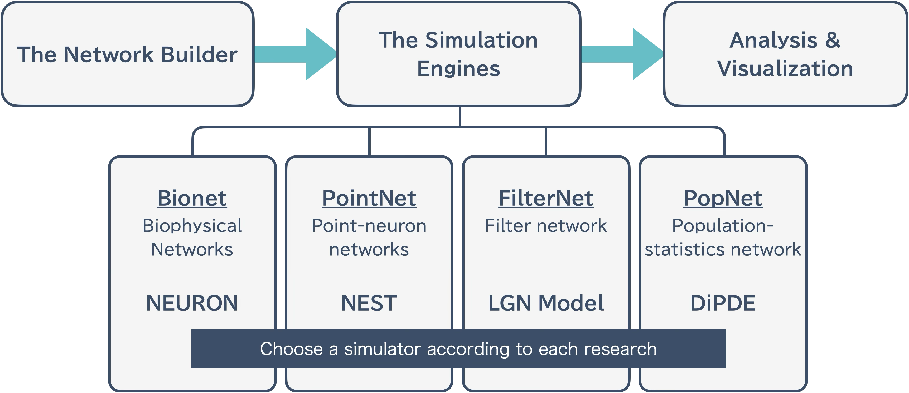
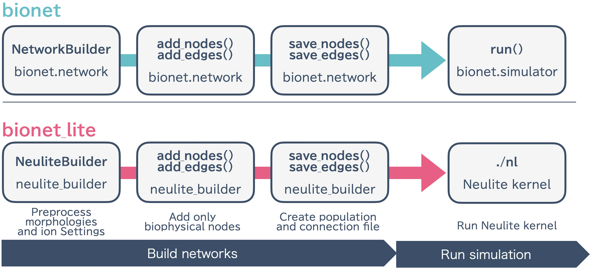

Design and Implementation
This page explains the background of BMTK and BioNet, as well as the design philosophy and implementation details of bionetlite.
About BMTK
BMTK (Brain Modeling Toolkit) is a modeling and simulation framework for the neuroscience community.
Modular Design
BMTK is intentionally divided into the following three modules:
{kind=link}

The Network Builder: Network construction
The Simulation Engines: Simulation execution
Analysis & Visualization: Analysis and visualization of results
This separation makes it easier to run large-scale simulations.
Data Standardization
BMTK supports data standardization formats in the neuroscience community:
SONATA: Network description format
Allen Cell Types Database: Database of model parameters
About BioNet
BioNet is one of the modules of BMTK and handles biophysical neuron networks.
BioNet Builder
This module handles only the network construction part.
Users write code to add neurons and synapses to the network
When executed, network information is output in formats such as H5 files or CSV files
The bionet simulator executes using these files
For large-scale networks, even network construction alone has high computational cost, and operating independently from the simulator part is useful from an error handling perspective.
Usage example:
from bmtk.builder.networks import NetworkBuilder
# Create network
net = NetworkBuilder('mcortex')
# Add nodes
net.add_nodes(...)
# Add edges
net.add_edges(...)
# Build and save
net.build()
net.save_nodes(output_dir='network')
net.save_edges(output_dir='network')
BioNet Simulator
Reads files generated by bionet builder and runs simulations using the NEURON simulator.
Design of bionetlite
bionetlite is designed as an extension of bionet. It generates files for the Neulite kernel with minimal changes to existing code.
NetworkBuilder Override
bionetlite extends the NetworkBuilder from bmtk.builder.networks:
# bionet case
from bmtk.builder.networks import NetworkBuilder
# bionetlite case
from bionetlite import NeuliteBuilder as NetworkBuilder
This simple import change realizes the following:
All bionet features remain available as is
NeuliteBuilder-specific processing is added
Minimal user code changes
Processing Flow
bionetlite processing flow:
{kind=link}

NeuliteBuilder initialization - Sets up preprocessing for morphology files and ion channel configuration
add_nodes() / add_edges() - Executes bionet processing as is and records only biophysical nodes
save_nodes() - In addition to bionet processing, generates
<network_name>_population.csvsave_edges() - In addition to bionet processing, determines synapse connection positions and generates
<src>_<trg>_connection.csv
Parallel Execution Support
bionetlite supports MPI parallel execution:
# Parallel execution with 4 processes
mpirun -n 4 python build_network.py
Processing during parallel execution:
Each MPI process independently executes network construction
File output is properly synchronized
Significantly reduces build time for large-scale networks
Next Steps
API Reference - API Reference
Basic Usage - Practical usage examples